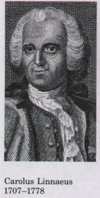
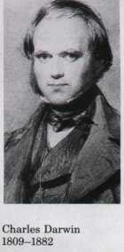

Molecular Anatomy Reveals Evolutionary Relationships
| Biochemistry has confirmed and greatly
extended evolutionary theory. Carolus Linnaeus recognized
the anatomic similarities and differences among living
organisms and provided a framework for assessing the
relatedness of different species. Charles Darwin gave us
a unifying hypothesis to explain the phylogeny of modern
organisms-the origin of different species from a common
ancestor. Biochemistry has begun to reveal the molecular
anatomy of cells of different species-the sequences of
subunits in nucleic acids and proteins and the
three-dimensional structures of individual molecules of
nucleic acid and protein. There is a reasonable prospect
that when the twenty-first century dawns, we will know
the entire nucleotide sequence of all of the genes that
make up the biological heritage of a human. At the
molecular level, evolution is the emergence over time of
different sequences of nucleotides within genes. With new
genetic sequences being experimentally determined almost
daily, biochemists have an enormously rich treasury of
evidence with which to analyze evolutionary relationships
and to refine evolutionary theory. The molecular
phylogeny derived from gene sequences is consistent with,
but in many cases more precise than, the classical
phylogeny based on macroscopic structures.
Molecular structures and mechanisms have been
conserved in evolution even though organisms have
continuously diverged at the level of gross anatomy. At
the molecular level, the basic unity of life is readily
apparent; crucial molecular structures and mechanisms are
remarkably similar from the simplest to the most complex
organisms. Biochemistry makes it possible to discover the
unifying features common to all life. This book examines
many of these features: the mechanisms for energy
conservation, biosynthesis, gene replication, and gene
expression.
|
 
|
The Linear Sequence in DNA Encodes Proteins with
Three-Dimensional Structures
| The information in DNA is encoded as a
linear (one-dimensional) sequence of the nucleotide units
of DNA, but the expression of this information results in
a three-dimensional cell. This change from one to three
dimensions occurs in two phases. A linear sequence of
deoxyribonucleotides in DNA codes (through the
intermediary, RNA) for the production of a protein with a
corresponding linear sequence of amino acids (Fig. 1-18).
The protein folds itself into a particular
three-dimensional shape, dictated by its amino acid
sequence. The precise threedimensional structure (native
conformation) is crucial to the protein's function as
either catalyst or structural element. This principle
emerges : The linear sequence of amino acids in a
protein leads to the acquisition of a unique
three-dimensional structure by a self assembly process.
Once a protein has folded into its native
conformation, it may associate noncovalently with other
proteins, or with nucleic acids or lipids, to form
supramolecular complexes such as chromosomes, ribosomes,
and membranes (Fig. 1-18). These complexes are in many
cases self assembling. The individual molecules of these
complexes have specific, high-affinity binding sites for
each other, and within the cell they spontaneously form
functional complexes.
Individual macromolecules with specific affinity for
other macromolecules self assemble into supramolecular
complexes.
|
 Fignre
1-18 Linear
sequences of deoxyribonucleotides in DNA, arranged into
units known as genes, are transcribed into ribonucleic
acid (RNA) molecules with complementary ribonucleotide
sequences. The RNA sequences are then translated into
linear protein chains, which fold spontaneously into
their native three-dimensional shapes. Individual
proteins sometimes associate with other proteins to form
supramolecular complexes, stabilized by numerous weak
interactions.
|
Noncovalent Interactions Stabilize Three-Dimensional
Structures
The forces that provide stability and specificity to the
three-dimensional structures of macromolecules and supramolecular
complexes are mostly noncovalent interactions. These
interactions, individually weak but collectively strong, include
hydrogen bonds, ionic interactions among charged groups, van der
Waals interactions, and hydrophobic interactions among nonpolar
groups. These weak interactions are transient; individually they
form and break in small fractions of a second. The transient
nature of noncovalent interactions confers a flexibility on
macromolecules that is critical to their function. Furthermore,
the large number of noncovalent interactions in a single
macromolecule makes it unlikely that at any given moment all the
interactions will be broken; thus macromolecular structures are
stable over time.
Three-dimensional biological structures combine the properties
of flexibility and stability.
The flexibility and stability of the double-helical structure
of DNA are due to the complementarity of its two strands and the
many weak interactions between them. The flexibility of these
interactions allows strand separation during DNA replication (see
Fig. 1-16); the complementarity of the double helix is essential
to genetic continuity.
Noncovalent interactions are also central to the specificity
and catalytic efficiency of enzymes. Enzymes bind
transition-state intermediates through numerous weak but
precisely oriented interactions. Because the weak interactions
are flexible, the complex survives the structural distortions as
the reactant is converted into product.
The formation of noncovalent interactions provides the energy
for self assembly of macromolecules by stabilizing native
conformations relative to unfolded, random forms. The native
conformation of a protein is that in which the energetic
advantages of forming weak interactions counterbalance the
tendency of the protein chain to assume random forms. Given a
specific linear sequence of amino acids and a specific set of
conditions (temperature, ionic conditions, pH), a protein will
assume its native conformation spontaneously, without a template
or scaffold to direct the folding.
The Physical Roots of the Biochemical World
We can now summarize the various principles of the molecular
logic of life:
A living cell is a self contained, self assembling,
self adjusting, self perpetuating isothermal system of
molecules that extracts free energy and raw materials from
its environment.
The cell carries out many consecutive reactions
promoted by specific catalysts, called enzymes, which it
produces itself.
The cell maintains itself in a dynamic steady state,
far from equilibrium with its surroundings. There is great
economy of parts and processes, achieved by regulation of the
catalytic activity of key enzymes.
Self replication through many generations is ensured
by the self repairing, linear information-coding system.
Genetic information encoded as sequences of nucleotide
subunits in DNA and RNA specifies the sequence of amino acids
in each distinct protein, which ultimately determines the
three-dimensional structure and function of each protein.
Many weak (noncovalent) interactions, acting
cooperatively, stabilize the three-dimensional structures of
biomolecules and supramolecular complexes.
At no point in our examination of the molecular logic of
living cells have we encountered any violation of known physical
laws; nor have we needed to define new physical laws. The organic
machinery of living cells functions within the same set of laws
that governs the operation of inanimate machines, but the
chemical reactions and regulatory processes of cells have been
highly refined during evolution.
This set of principles has been most thoroughly validated in
studies of unicellular organisms (such as the bacterium E. coli),
which are exceptionally amenable to biochemical and genetic
study. Although multicellular organisms must solve certain
problems not encountered by unicellular organisms, such as the
differentiation of the fertilized egg into specialized cell
types, the same principles have been found to apply. Can such
simple and mechanical statements apply to humans as well, with
their extraordinary capacity for thought, language, and
creativity? The pace of recent biochemical progress toward
understanding such processes as gene regulation, cellular
differentiation, communication among cells, and neural function
has been extraordinarily fast, and is accelerating. The success
of biochemical methods in solving and redefining these problems
justifies the hope that the most complex functions of the most
highly developed organism will eventually be explicable in
molecular terms.
The relevant facts of biochemistry are many; the student
approaching this subject for the first time may occasionally feel
overwhelmed. Perhaps the most encouraging development in
twentieth century biology is the realization that, for all of the
enormous diversity in the biological world, there is a
fundamental unity and simplicity to life. The organizing
principles, the biochemical unity, and the evolutionary
perspective of diversity, provided at the molecular level, will
serve as helpful frames of reference for the study of
biochemistry.
Further Reading :
Asimov, I. (1962) Life and Energy: An Exploration of the
Physical and Chemical Basis of Modern Biology, Doubleday &
Co., Inc., New York.
An engaging account of the role of energy transformations
in biology, written for the intelligent layman.
Blum, H.F. (1968) Time's Arrow and Euolution, 3rd edn,
Princeton University Press, Princeton, NJ.
An excellent discussion of the way the second law of
thermodynamics has influenced biological euolution.
Dulbecco, R. (1987) The Design of Life, Yale University Press,
New Haven, CT.
An unusual and excellent introduction to biology.
Fruton, J.S. (1972) Molecules and Life. Historical Essays on
the Interplay of Chemistry and Biology, Wiley-Interscience, New
York.
This series of essays describes the deuelopment of
biochemistry from Pasteur's studies of fermentation to the
present studies of metabolism and information transfer. You may
want to refer to these essays through this textbook.
Fruton, J.S. (1992) A Skeptical Biochemist, Harvard University
Press, Cambridge, MA.
Hawking, S. (1988) A Brief History of Time, Bantam Books,
Inc., New York.
Jacob, F. (1973) The Logic of Life: A History of Heredity,
Pantheon Books, Inc., New York. Originally published (1970) as La
logique du vivant: une histoire de L'heredite, Editions
Gallimard, Paris.
A fascinating historical and philosophical account of the
route by which we came to the present molecular understanding of
life.
Kornberg, A. (1987) The two cultures: chemistry and biology.
Biochem. 26, 6888-6891.
The importance of applying chemical tools to biological
problems, described by an eminent practitioner.
Monod, J. (1971) Chance and Necessity, Alfred A. Knopf, Inc.,
New York. [Paperback version (1972) Vintage Books, New York.]
Originally published (1970) as Le hasard et la necessite,
Editions du Seuil, Paris.
An exploration of the philosophical implications of
biological knowledge.
Schrodinger, E. (1944) What is Life? Cambridge University
Press, New York. [Reprinted (1956) in What is Life? and Other
Scientific Essays, Doubleday Anchor Books, Garden City, NY.]
A thought-provoking look at life, written by a prominent
physical chemist.